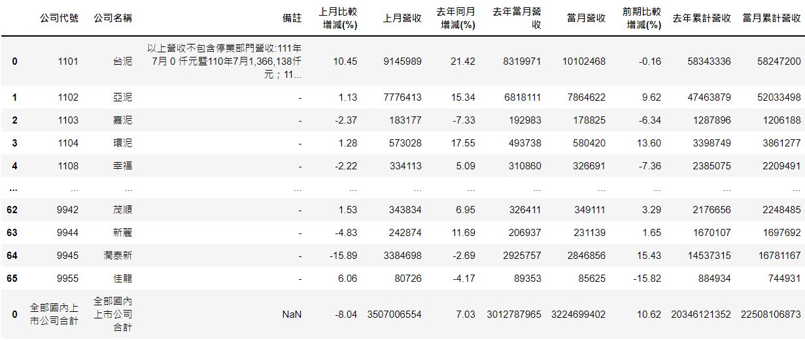
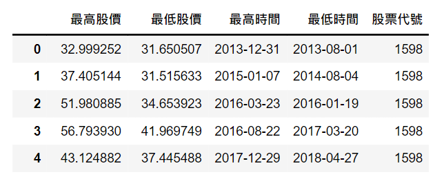

使用台股2022年7月營收做為範例

取值
取值相當方便只要df[‘colName’]就好,但記得要import套件。
爬蟲程式請參考這篇1
2
3
4
5
6
7
8
9
10
11
12
13
14
15
16
17
18
19
20import pandas as pd
import datetime
year=datetime.date.today().year
month=datetime.date.today().month-1
try:
df=monthly_report(year, month)
except:
print('尚未公布') #month_report為爬蟲函示他會返回上圖的dataframe
# 得到台股所有YoY
df['去年同月增減(%)']
# 得到台股所有MoM
df['去年同月增減(%)']
# 得到台泥的MoM
df['去年同月增減(%)'][0]
# 得到台泥的所有資料(第一個row)
df.iloc[0]
# 新增欄位(col)
df['漲幅'] = 0.0 # 一開始給予的初始值會決定這個欄位的type喔，此範例設為float
# row跟col對調
df.T
過濾資料
可想而知只取得資料對我們是沒意義的，要過濾後的資料才是有用的。
那基礎很簡單，將條件放入dataframe即可，其中dataframe給予了很多寫好的條件，接下來會一一描述，需要注意的是若今天不想覆蓋掉最原始的資料必須用temp=df.copy()而非temp=df。
若使用後者當temp改動df也會跟著改變 1
2
3
4
5
6
7
8
9
10
11
12
13
14
15yoyrate=df.copy()
# 得到台股前200家YoY好的公司
yoyrate['去年同月增減(%)'].nlargest(200)
# 得到台股前200家的最小值
yoyrate['去年同月增減(%)'].nlargest(200).min()
# 得到台股前200家的最大值
yoyrate['去年同月增減(%)'].nlargest(200).max()
# 得到台股前200家的平均
yoyrate['去年同月增減(%)'].nlargest(200).mean()
# 得到台股前200家的中位數
yoyrate['去年同月增減(%)'].nlargest(200).median()
# 得到台股前200家的四分位距
yoyrate['去年同月增減(%)'].nlargest(200).quantile(0.75) #0.75=Q3 0.5=Q2...
# 讓台股依照YoY排序
yoyrate=yoyrate.sort_values(['去年同月增減(%)'],ascending=False) #ascending=False大到小 True小到大
接下來是多個條件之語法
- 不能用and or 要用& |
- 每個條件都要用()包起來ex (條件一) & (條件二)
- 等於一樣是==而非=
- 透過df[‘條件’]來過濾
1
2
3
4
5
6
7#尋找MoM跟YoY都大於20的股票
temp = res.copy()
condition = (temp['上月比較增減(%)']>20) & (temp['去年同月增減(%)']>20)
temp[condition]
#尋找MoM或YoY大於20的股票
condition = (temp['上月比較增減(%)']>20) | (temp['去年同月增減(%)']>20)
temp[condition]
Dataframe 的合併與型態轉換
合併有兩種
- 從row合併 concat() (切記col的數量要一致才行)
- 從col合併 merge() (同理row的數量要一致才行)接下來使用的範例是抓取每個波段高點與低點並存成dataframe，至於怎抓波段有空再教大家~
1
2
3
4# 只將台積電與台泥合併
df_2330 = df['公司代號']==2330
df_1101 = df['公司代號']==1101
res=pd.concat([df_2330,df_1101], join='inner')
解釋:maxValueList式波段中的所有高點但是type為list以此類推。結果:1
2
3
4
5
6
7
8
9
10
11# 多個list to dataframe
df_max=pd.DataFrame(maxValueList,columns=['最高股價'])
df_min=pd.DataFrame(minValueList,columns=['最低股價'])
df_maxT=pd.DataFrame(maxTimeList,columns=['最高時間'])
df_minT=pd.DataFrame(minTimeList,columns=['最低時間'])
df_id=pd.DataFrame(stockid,columns=['股票代號'])
# 將多個同樣數量的row之df向右合併
df_max=df_max.merge(df_min, how='inner', left_index=True, right_index=True)
df_max=df_max.merge(df_maxT, how='inner', left_index=True, right_index=True)
df_max=df_max.merge(df_minT, how='inner', left_index=True, right_index=True)
df_max=df_max.merge(df_id, how='inner', left_index=True, right_index=True)

將dataframe存成excel or csv
dataframe有一點很方便，就是可以直接存成csv檔或excel格式，且也可以直接讀檔，語法也相當簡單在你的df後面加上函式以及檔名即可。1
2
3
4
5
6
7
8# 存成csv
res_y.to_csv('test.csv',index=False)
# 存成excel
df.to_excel('test.xlsx',index=False)
# 讀檔csv
df = pd.read_csv('test.csv')
# 讀檔csv
df = pd.read_csv('test.xlsx')
接下來則是將excel的每隔寬度客製化，以方便查看資料較長的欄位。
下面例子為若讀到備註欄位則設置寬度為100。1
2
3
4
5
6
7
8with pd.ExcelWriter('test.xlsx', engine='xlsxwriter') as writer:
df.to_excel(writer, index=False, na_rep='NaN')
for column in df: # 遍瀝每個欄位
column_width=10
if(column=='備註'):
column_width = 100
col_idx = df.columns.get_loc(column)
writer.sheets['Sheet1'].set_column(col_idx, col_idx, column_width) # 指定該欄位大小
再來是將有多個工作表的excel讀取1
2
3
4
5
6
7wb = openpyxl.load_workbook("goodMoM100.xlsx")
test=[]
file_name="goodMoM100.xlsx"
size=wb.sheetnames # 得到所有工作表
for i in size:
test.append(pd.read_excel(file_name, sheet_name=i,engine='openpyxl'))
test[0] # 將會是第一個工作表的資料
最後是將多個df存成多個工作表。1
2
3
4
5# test會是多個dataframe
sub_sheet=['你想要的工作表名字','.......']
with pd.ExcelWriter(f'singlehighMoM100.xlsx', engine='xlsxwriter') as writer:
for i in range(len(test)):
test[i].to_excel(writer, sheet_name=sub_sheet[i])
結語
今天的教學就到這邊拉，若案讚數超過10，我會教大家如何抓取波段，或者個股營收依舊不同月份存入不同工作表的方法喔~
也歡迎大家來一起討論台股喔!